Candidate List 20260731Last night — ZTF: 2,086 passed basic cuts (120 young) · LSST: 0 passed basic cuts (0 young)Previous Day Next Day
Section 1: New Sources (age<1d) Section 2: Old (1-5d) sources observed last nightplaceholder
Section 1: New Afterglow/FBOT Cands Last Night (10)
1. [ZTF] ZTF26abkvymc (Afterglow?FBOT?) [Back to Top] [Share] [Trigger Swift] [Fritz Alert] [Fritz Source] [Lasair]RA, Dec: 347.48513, -6.9137 23h 9m56.43s, -6d-54m-49.33sGalactic (l, b): 68.29074, -58.55815 WARNING: -1.43 deg from ecliptic plane ext(g-r) = 0.043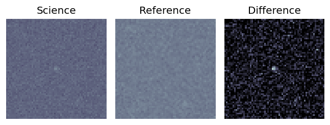
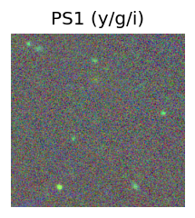
TESS: Sectors [42 70]
PS1: 0 sources in 3 arcsec
LegacySurvey: 1 sources in 3 arcsec Closest: d = 1.63 arcsec, 114.7 deg (east of north) photoz=1.02 (68% bounds 0.77, 1.89), type=PSF peak abs mag = -25.76 (68% bounds -25.03, -27.42)
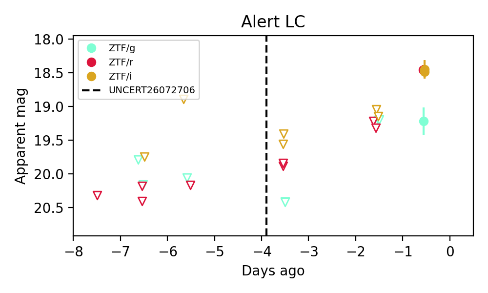
Extinction-corrected gr color:
From alerts: 0.72 +/- 0.21 mag
Extinction-corrected gi color:
From alerts: 0.68 +/- 0.21 mag
Extinction-corrected ri color:
From alerts: -0.04 +/- 0.1 mag
Consistent with synchrotron, g-r>0!
Rise Rate:
g: 0.41 mag/day
r: 0.86 mag/day
i: 0.71 mag/day
Fade Rate:
2. [ZTF] ZTF26abkwdqw (Afterglow?) [Back to Top] [Share] [Trigger Swift] [Fritz Alert] [Fritz Source] [Lasair]RA, Dec: 351.99588, -10.60952 23h27m59.01s, -10d-36m-34.26sGalactic (l, b): 68.99732, -64.33857 ext(g-r) = 0.034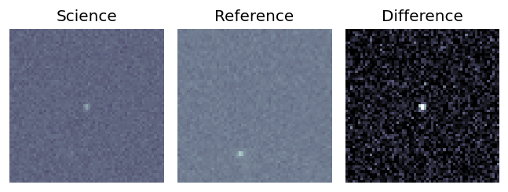
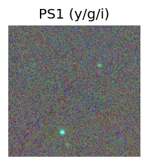
TESS: Sectors [ 2 29 42 70 92]
PS1: 0 sources in 3 arcsec
LegacySurvey: 1 sources in 3 arcsec Closest: d = 7.86 arcsec, 299.6 deg (east of north) photoz=1.11 (68% bounds 0.94, 1.27), type=REX peak abs mag = -25.72 (68% bounds -25.28, -26.08)
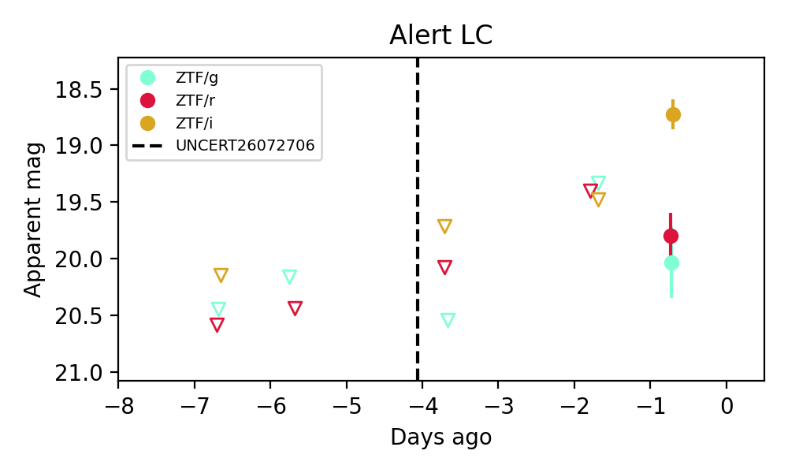
Extinction-corrected gr color:
From alerts: 0.2 +/- 0.38 mag
Extinction-corrected gi color:
From alerts: 1.26 +/- 0.34 mag
Extinction-corrected ri color:
From alerts: 1.06 +/- 0.25 mag
Consistent with synchrotron, g-r>0!
Rise Rate:
r: 0.13 mag/day
i: 0.76 mag/day
Fade Rate:
3. [ZTF] ZTF26abkweut (Afterglow?FBOT?) [Back to Top] [Share] [Trigger Swift] [Fritz Alert] [Fritz Source] [Lasair]RA, Dec: 353.64125, -9.71113 23h34m33.90s, -9d-42m-40.06sGalactic (l, b): 73.14192, -64.85887 ext(g-r) = 0.027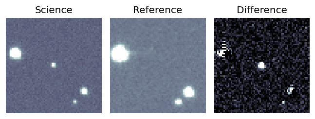
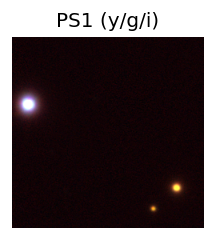
TESS: Sectors [ 2 29 42 70 92]
PS1: 0 sources in 3 arcsec
LegacySurvey: 1 sources in 3 arcsec Closest: d = 0.62 arcsec, 71.3 deg (east of north) photoz=0.76 (68% bounds 0.55, 1.09), type=PSF peak abs mag = -26.58 (68% bounds -25.73, -27.55)
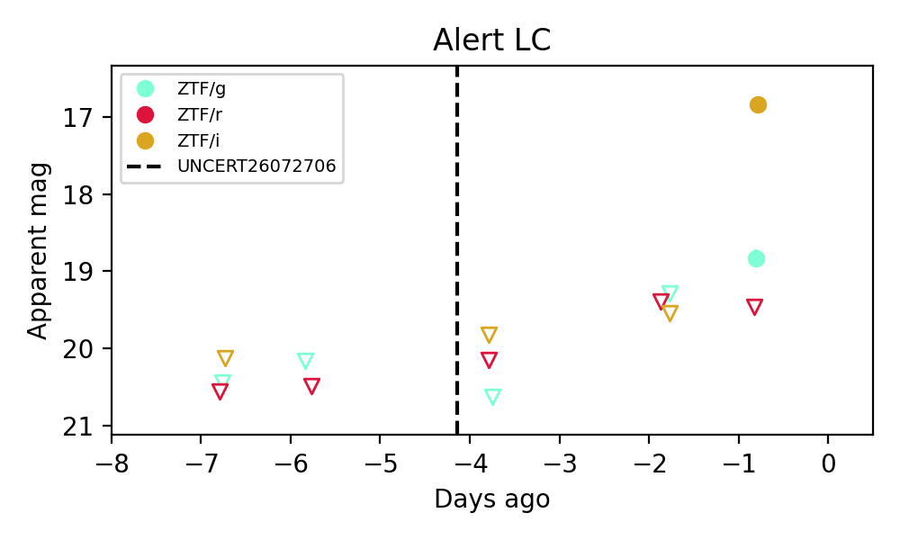
Extinction-corrected gr color:
From alerts: -0.65 +/- 99 mag
Extinction-corrected gi color:
From alerts: 1.96 +/- 0.13 mag
Extinction-corrected ri color:
From alerts: 2.61 +/- 99 mag
Consistent with synchrotron, g-r>0!
Rise Rate:
g: 0.61 mag/day
i: 2.74 mag/day
Fade Rate:
4. [ZTF] ZTF26abkwfqm (Afterglow?) [Back to Top] [Share] [Trigger Swift] [Fritz Alert] [Fritz Source] [Lasair]RA, Dec: 346.47611, 5.86814 23h 5m54.27s, 5d52m5.30sGalactic (l, b): 81.30055, -48.28725 ext(g-r) = 0.059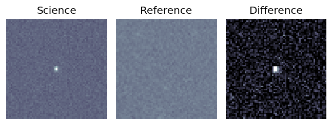
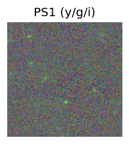
TESS: Sectors [42 56 83 92]
PS1: 0 sources in 3 arcsec
LegacySurvey: 0 sources in 3 arcsec
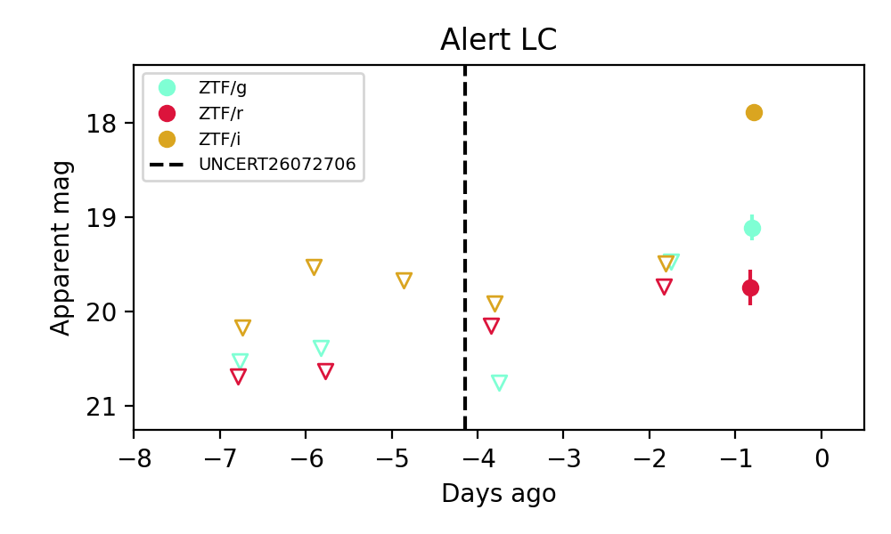
Extinction-corrected gr color:
From alerts: -0.69 +/- 0.23 mag
Extinction-corrected gi color:
From alerts: 1.14 +/- 0.15 mag
Extinction-corrected ri color:
From alerts: 1.83 +/- 0.2 mag
Consistent with synchrotron, g-r>0!
Rise Rate:
g: 0.56 mag/day
r: 0.18 mag/day
i: 1.57 mag/day
Fade Rate:
5. [ZTF] ZTF26abkwghi (Afterglow?) [Back to Top] [Share] [Trigger Swift] [Fritz Alert] [Fritz Source] [Lasair]RA, Dec: 350.83476, -13.23031 23h23m20.34s, -13d-13m-49.12sGalactic (l, b): 62.58181, -65.16207 ext(g-r) = 0.034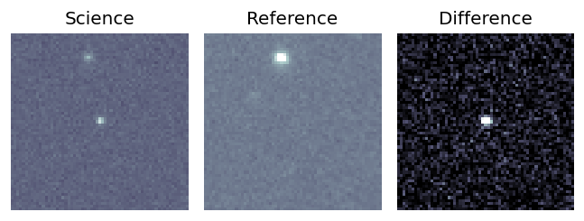
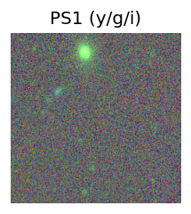
TESS: Sectors [ 2 42 69 70 92 96]
PS1: 0 sources in 3 arcsec
LegacySurvey: 1 sources in 3 arcsec Closest: d = 3.73 arcsec, 232.1 deg (east of north) photoz=0.52 (68% bounds 0.37, 0.94), type=REX peak abs mag = -24.65 (68% bounds -23.79, -26.23)
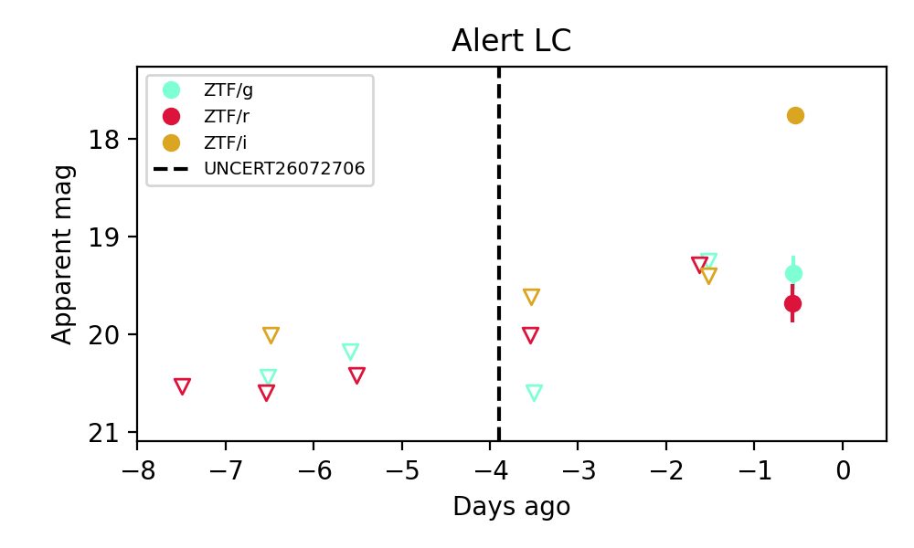
Extinction-corrected gr color:
From alerts: -0.35 +/- 0.26 mag
Extinction-corrected gi color:
From alerts: 1.56 +/- 0.19 mag
Extinction-corrected ri color:
From alerts: 1.91 +/- 0.2 mag
Consistent with synchrotron, g-r>0!
Rise Rate:
g: 0.42 mag/day
r: 0.15 mag/day
i: 1.67 mag/day
Fade Rate:
6. [ZTF] ZTF26abkwhtw (Afterglow?) [Back to Top] [Share] [Trigger Swift] [Fritz Alert] [Fritz Source] [Lasair]RA, Dec: 351.8033, 2.97698 23h27m12.79s, 2d58m37.11sGalactic (l, b): 85.64329, -53.68372 ext(g-r) = 0.043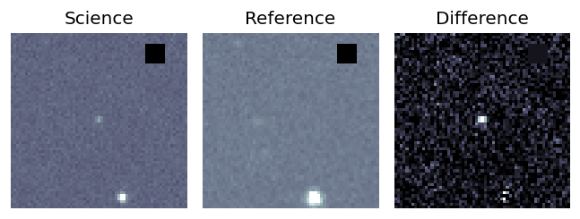
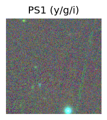
TESS: Sectors [42 70 92]
PS1: 0 sources in 3 arcsec
LegacySurvey: 1 sources in 3 arcsec Closest: d = 9.35 arcsec, 165.8 deg (east of north) photoz=1.14 (68% bounds 0.98, 1.31), type=REX peak abs mag = -25.58 (68% bounds -25.18, -25.95)
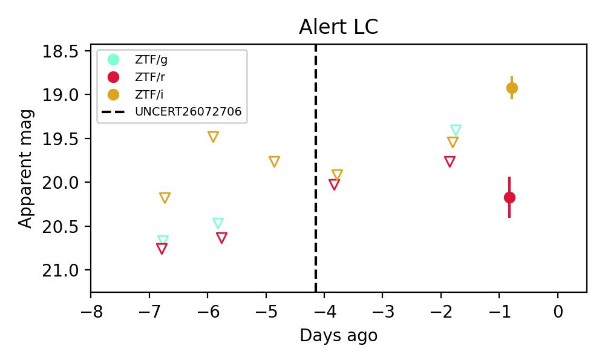
Extinction-corrected ri color:
From alerts: 1.22 +/- 0.27 mag
Consistent with synchrotron, g-r>0!
Rise Rate:
r: 0.1 mag/day
i: 0.6 mag/day
Fade Rate:
7. [ZTF] ZTF26abkwjlh (Afterglow?) [Back to Top] [Share] [Trigger Swift] [Fritz Alert] [Fritz Source] [Lasair]RA, Dec: 354.32235, -1.37339 23h37m17.36s, -1d-22m-24.22sGalactic (l, b): 85.20832, -58.70456 WARNING: 0.99 deg from ecliptic plane ext(g-r) = 0.036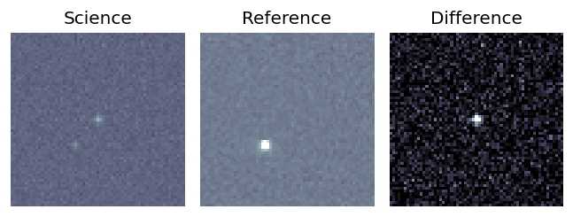
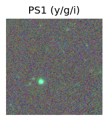
TESS: Sectors [70 92]
PS1: 0 sources in 3 arcsec
LegacySurvey: 1 sources in 3 arcsec Closest: d = 4.71 arcsec, 337.7 deg (east of north) photoz=0.75 (68% bounds 0.5, 1.15), type=REX peak abs mag = -25.5 (68% bounds -24.44, -26.65)
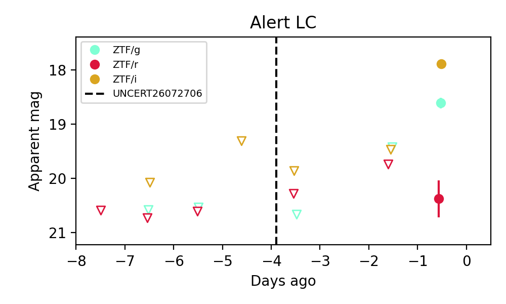
Extinction-corrected gr color:
From alerts: -1.8 +/- 0.36 mag
Extinction-corrected gi color:
From alerts: 0.66 +/- 0.11 mag
Extinction-corrected ri color:
From alerts: 2.47 +/- 0.35 mag
Consistent with synchrotron, g-r>0!
Rise Rate:
g: 0.81 mag/day
i: 1.52 mag/day
Fade Rate:
8. [ZTF] ZTF26abkwpgi (FBOT?) [Back to Top] [Share] [Trigger Swift] [Fritz Alert] [Fritz Source] [Lasair]RA, Dec: 350.2956, -5.80148 23h21m10.94s, -5d-48m-5.32sGalactic (l, b): 73.68415, -59.73957 WARNING: -1.49 deg from ecliptic plane ext(g-r) = 0.046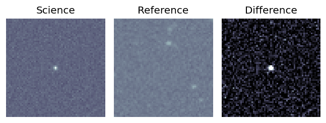
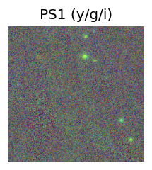
TESS: Sectors [42 70 92]
PS1: 0 sources in 3 arcsec
LegacySurvey: 1 sources in 3 arcsec Closest: d = 0.46 arcsec, 113.7 deg (east of north) photoz=1.1 (68% bounds 0.91, 1.45), type=REX peak abs mag = -26.25 (68% bounds -25.75, -26.99)
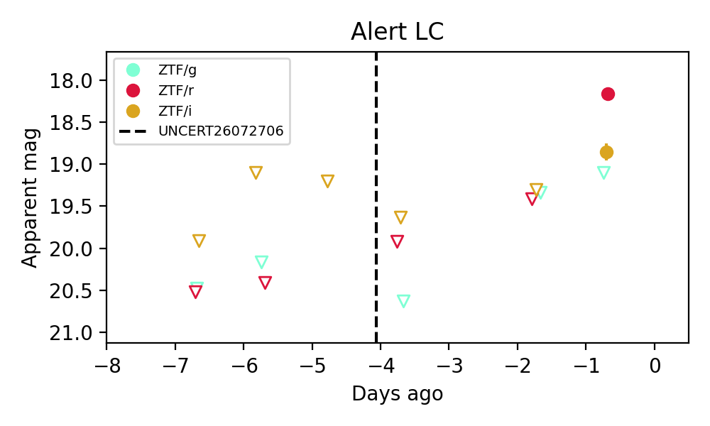
Extinction-corrected gr color:
From alerts: 0.89 +/- 99 mag
Extinction-corrected gi color:
From alerts: 0.17 +/- 99 mag
Extinction-corrected ri color:
From alerts: -0.72 +/- 0.13 mag
Rise Rate:
r: 1.13 mag/day
i: 0.44 mag/day
Fade Rate:
9. [ZTF] ZTF26abkwraz (FBOT?) [Back to Top] [Share] [Trigger Swift] [Fritz Alert] [Fritz Source] [Lasair]RA, Dec: 348.90262, -4.43109 23h15m36.63s, -4d-25m-51.92sGalactic (l, b): 73.50824, -57.79161 WARNING: 0.31 deg from ecliptic plane ext(g-r) = 0.048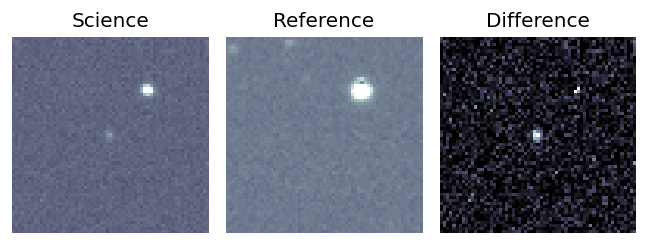
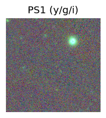
TESS: Sectors 70
PS1: 0 sources in 3 arcsec
LegacySurvey: 1 sources in 3 arcsec Closest: d = 1.91 arcsec, 237.0 deg (east of north) photoz=0.79 (68% bounds 0.63, 1.02), type=REX peak abs mag = -24.54 (68% bounds -23.9, -25.19)
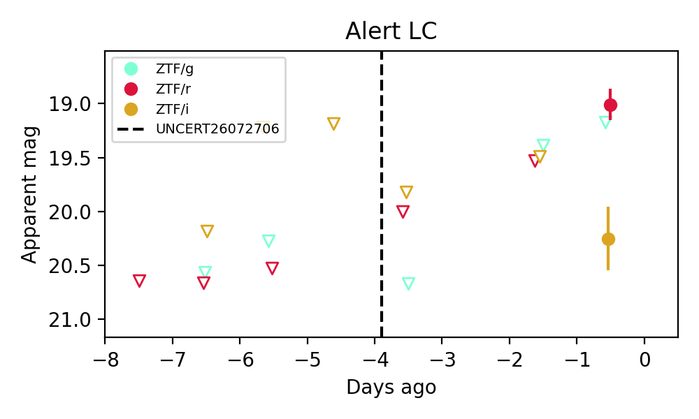
Extinction-corrected gr color:
From alerts: 0.12 +/- 99 mag
Extinction-corrected gi color:
From alerts: -1.15 +/- 99 mag
Extinction-corrected ri color:
From alerts: -1.27 +/- 0.33 mag
Rise Rate:
r: 0.47 mag/day
Fade Rate:
10. [ZTF] ZTF26abkwrbs (FBOT?) [Back to Top] [Share] [Trigger Swift] [Fritz Alert] [Fritz Source] [Lasair]RA, Dec: 345.16501, -3.97335 23h 0m39.60s, -3d-58m-24.05sGalactic (l, b): 69.27434, -54.85838 WARNING: 2.18 deg from ecliptic plane ext(g-r) = 0.065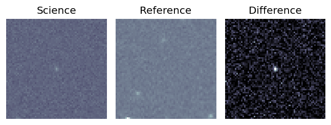
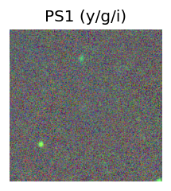
TESS: Sectors [42 70 92]
PS1: 0 sources in 3 arcsec
LegacySurvey: 1 sources in 3 arcsec Closest: d = 0.97 arcsec, 112.3 deg (east of north) photoz=0.84 (68% bounds 0.57, 1.11), type=PSF peak abs mag = -24.47 (68% bounds -23.45, -25.22)
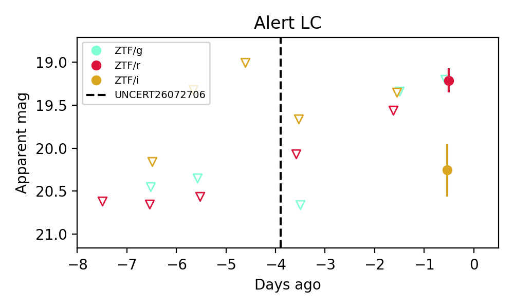
Extinction-corrected gr color:
From alerts: -0.07 +/- 99 mag
Extinction-corrected gi color:
From alerts: -1.15 +/- 99 mag
Extinction-corrected ri color:
From alerts: -1.08 +/- 0.34 mag
Rise Rate:
r: 0.31 mag/day
Fade Rate:
Section 2: Older Sources Observed Last Night (13)
0. [ZTF] ZTF26abjyfjg (Afterglow?) [Back to Top] [Share] [Trigger Swift] [Fritz Alert] [Fritz Source] [Lasair]RA, Dec: 17.59175, -9.56892 1h10m22.02s, -9d-34m-8.12sGalactic (l, b): 138.09639, -71.88113 ext(g-r) = 0.062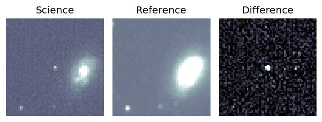
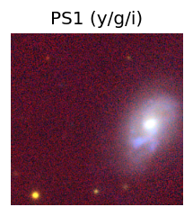
TESS: Sectors [ 3 30 97]
PS1: 0 sources in 3 arcsec
LegacySurvey: 1 sources in 3 arcsec Closest: d = 4.61 arcsec, 314.6 deg (east of north) photoz=0.6 (68% bounds 0.28, 2.0), type=REX peak abs mag = -25.2 (68% bounds -23.21, -28.4)
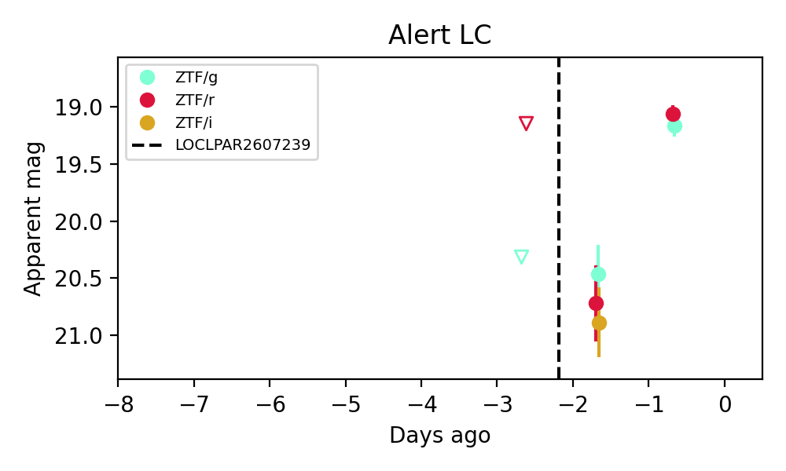
Extinction-corrected gr color:
From alerts: -0.13 +/- 0.08 mag
Extinction-corrected gi color:
From alerts: -0.52 +/- 0.4 mag
Extinction-corrected ri color:
From alerts: -0.2 +/- 0.45 mag
Consistent with synchrotron, g-r>0!
Rise Rate:
g: 0.6 mag/day
r: 0.51 mag/day
i: 0.45 mag/day
Fade Rate:
1. [ZTF] ZTF26abkcmvx (FBOT?) [Back to Top] [Share] [Trigger Swift] [Fritz Alert] [Fritz Source] [Lasair]RA, Dec: 221.24997, 1.41001 14h44m59.99s, 1d24m36.04sGalactic (l, b): 354.35653, 52.55433 ext(g-r) = 0.042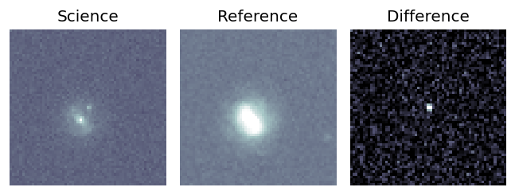
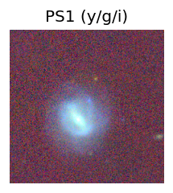
TESS: Sectors 51
NED (10 arcsec):Found NED spec-z: z=0.03; peak abs mag = -18.35
PS1: 0 sources in 3 arcsec
LegacySurvey: 1 sources in 3 arcsec Closest: d = 2.09 arcsec, 337.7 deg (east of north) photoz=0.07 (68% bounds 0.02, 0.19), type=REX peak abs mag = -19.82 (68% bounds -16.67, -22.16)
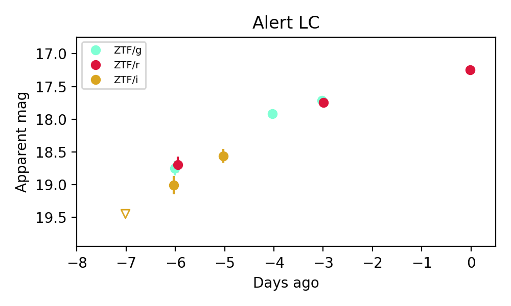
Extinction-corrected gr color:
From alerts: -0.07 +/- 0.09 mag
Extinction-corrected gi color:
From alerts: -0.32 +/- 0.18 mag
Extinction-corrected ri color:
From alerts: -0.34 +/- 0.18 mag
Consistent with synchrotron, g-r>0!
Rise Rate:
g: 0.34 mag/day
r: 0.32 mag/day
i: 0.44 mag/day
Fade Rate:
2. [ZTF] ZTF26abkksyt (FBOT?) [Back to Top] [Share] [Trigger Swift] [Fritz Alert] [Fritz Source] [Lasair]RA, Dec: 274.68375, 68.3517 18h18m44.10s, 68d21m6.13sGalactic (l, b): 98.48642, 28.06755 ext(g-r) = 0.045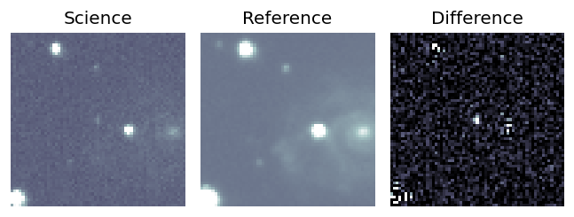
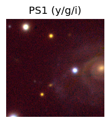
TESS: Sectors [ 14 15 16 17 19 20 22 23 25 26 40 41 47 49 50 52 53 54
55 56 57 58 59 60 73 74 75 76 77 79 81 82 83 84 85 117
118 119 120 121]
PS1: 0 sources in 3 arcsec
LegacySurvey: 1 sources in 3 arcsec Closest: d = 1.86 arcsec, 317.9 deg (east of north) photoz=0.1 (68% bounds 0.02, 0.2), type=EXP peak abs mag = -19.52 (68% bounds -15.89, -21.21)
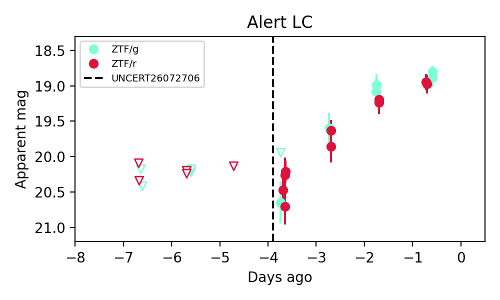
Extinction-corrected gr color:
From alerts: -0.18 +/- 0.11 mag
Rise Rate:
g: 0.41 mag/day
r: 0.47 mag/day
Fade Rate:
3. [ZTF] ZTF26abkoycd (Afterglow?FBOT?) [Back to Top] [Share] [Trigger Swift] [Fritz Alert] [Fritz Source] [Lasair]RA, Dec: 295.28401, 60.82161 19h41m8.16s, 60d49m17.79sGalactic (l, b): 92.93893, 17.7442 ext(g-r) = 0.063

TESS: Sectors [ 14 15 16 17 18 20 21 23 40 41 47 48 50 51 54 55 56 57
58 59 60 73 74 75 76 77 81 82 83 84 85 86 119 120 121]
PS1: 0 sources in 3 arcsec
LegacySurvey: 1 sources in 3 arcsec Closest: d = 7.58 arcsec, 237.0 deg (east of north) photoz=0.1 (68% bounds 0.05, 0.31), type=PSF peak abs mag = -20.04 (68% bounds -18.44, -22.7)

Extinction-corrected gr color:
From alerts: 0.38 +/- 0.14 mag
Consistent with synchrotron, g-r>0!
Rise Rate:
g: 0.56 mag/day
r: 1.85 mag/day
Fade Rate:
g: 0.73 mag/day
r: 0.5 mag/day
4. [ZTF] ZTF26abkqcko (Afterglow?) [Back to Top] [Share] [Trigger Swift] [Fritz Alert] [Fritz Source] [Lasair]RA, Dec: 297.7608, 39.15655 19h51m2.59s, 39d 9m23.57sGalactic (l, b): 73.99735, 6.34182 ext(g-r) = 0.317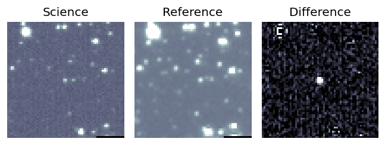
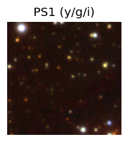
TESS: Sectors [ 14 15 54 55 74 75 81 82 119 120]
PS1: 0 sources in 3 arcsec
LegacySurvey: 0 sources in 3 arcsec
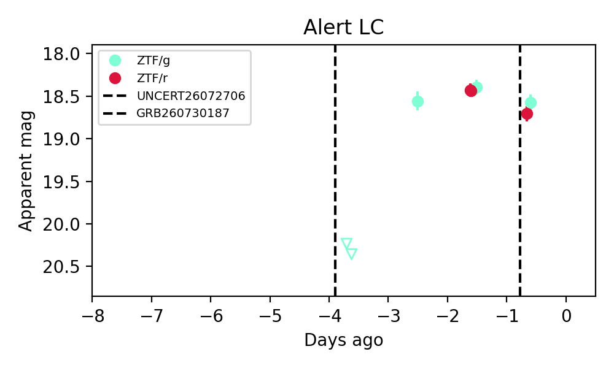
Extinction-corrected gr color:
From alerts: -0.45 +/- 0.13 mag
Rise Rate:
g: 1.6 mag/day
r: 0.28 mag/day
Fade Rate:
r: 0.29 mag/day
5. [ZTF] ZTF22abfxgup (FBOT?) [Back to Top] [Share] [Trigger Swift] [Fritz Alert] [Fritz Source] [Lasair]RA, Dec: 285.39396, -3.44544 19h 1m34.55s, -3d-26m-43.58sGalactic (l, b): 31.01597, -3.8238 ext(g-r) = 0.965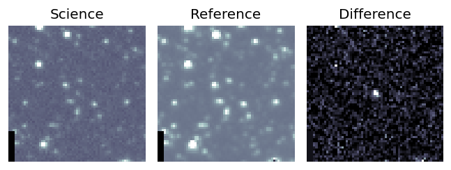
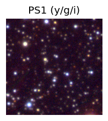
TESS: Sectors 80
PS1: 1 source in 3 arcsec Closest: d = 0.20 arcsec photoz=0.40+/-0.06 peak abs mag = -24.20
LegacySurvey: 0 sources in 3 arcsec
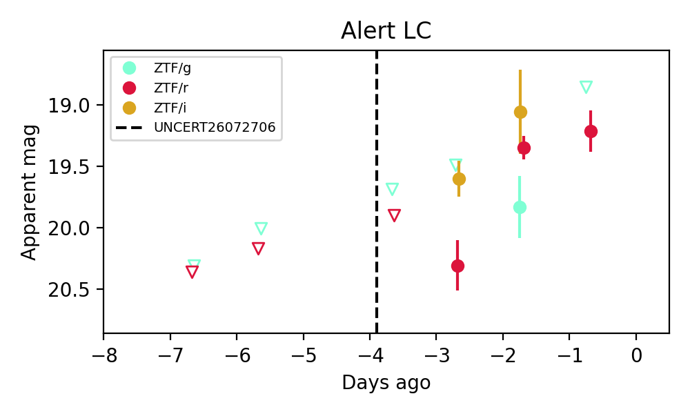
Extinction-corrected gr color:
From alerts: -1.33 +/- 99 mag
Extinction-corrected gi color:
From alerts: -0.71 +/- 0.43 mag
Extinction-corrected ri color:
From alerts: -0.23 +/- 0.36 mag
Consistent with synchrotron, g-r>0!
Rise Rate:
g: 0.11 mag/day
r: 0.49 mag/day
i: 0.15 mag/day
Fade Rate:
6. [ZTF] ZTF26abkvbrj (FBOT?) [Back to Top] [Share] [Trigger Swift] [Fritz Alert] [Fritz Source] [Lasair]RA, Dec: 284.12415, 47.43724 18h56m29.80s, 47d26m14.05sGalactic (l, b): 77.33626, 18.81796 ext(g-r) = 0.058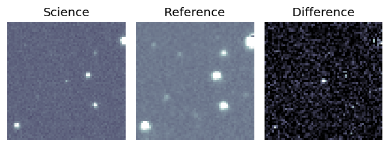
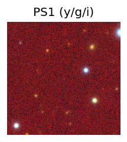
TESS: Sectors [ 14 26 40 41 53 54 55 74 75 80 81 82 118 119 120]
PS1: 0 sources in 3 arcsec
LegacySurvey: 1 sources in 3 arcsec Closest: d = 0.69 arcsec, 168.7 deg (east of north) photoz=0.93 (68% bounds 0.79, 1.09), type=PSF peak abs mag = -24.04 (68% bounds -23.6, -24.47)
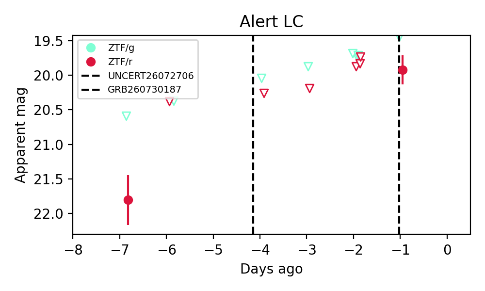
Extinction-corrected gr color:
From alerts: -0.53 +/- 99 mag
Rise Rate:
r: 0.32 mag/day
Fade Rate:
7. [ZTF] ZTF26abkvrwp (FBOT?) [Back to Top] [Share] [Trigger Swift] [Fritz Alert] [Fritz Source] [Lasair]RA, Dec: 1.76427, -11.97942 0h 7m3.43s, -11d-58m-45.91sGalactic (l, b): 86.27913, -71.61844 ext(g-r) = 0.038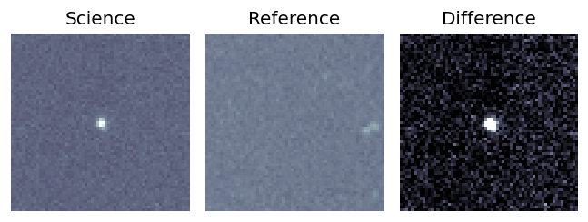
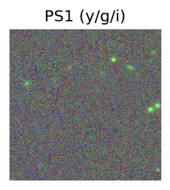
TESS: Sectors [ 29 69 70 107]
PS1: 0 sources in 3 arcsec
LegacySurvey: 1 sources in 3 arcsec Closest: d = 1.57 arcsec, 215.1 deg (east of north) photoz=0.84 (68% bounds 0.52, 2.19), type=REX peak abs mag = -26.98 (68% bounds -25.7, -29.54)
Extinction-corrected gr color:
From alerts: 1.02 +/- 99 mag
Rise Rate:
r: 2.6 mag/day
Fade Rate:
8. [ZTF] ZTF26abkvwpg (FBOT?) [Back to Top] [Share] [Trigger Swift] [Fritz Alert] [Fritz Source] [Lasair]RA, Dec: 351.85267, -1.89892 23h27m24.64s, -1d-53m-56.12sGalactic (l, b): 80.79126, -57.72457 WARNING: 1.49 deg from ecliptic plane ext(g-r) = 0.058
TESS: Sectors [42 70 92]
PS1: 0 sources in 3 arcsec
LegacySurvey: 1 sources in 3 arcsec Closest: d = 1.35 arcsec, 130.0 deg (east of north) photoz=0.84 (68% bounds 0.51, 1.16), type=REX peak abs mag = -25.07 (68% bounds -23.77, -25.96)
Extinction-corrected gr color:
From alerts: 0.21 +/- 99 mag
Extinction-corrected ri color:
From alerts: 0.22 +/- 99 mag
Rise Rate:
r: 1.03 mag/day
Fade Rate:
9. [ZTF] ZTF26abkvyso (FBOT?) [Back to Top] [Share] [Trigger Swift] [Fritz Alert] [Fritz Source] [Lasair]RA, Dec: 346.36614, 7.51911 23h 5m27.87s, 7d31m8.80sGalactic (l, b): 82.60799, -46.88718 ext(g-r) = 0.053
TESS: Sectors [56 83 92]
SDSS (<15 kpc):Found SDSS phot-z: z=0.07; peak abs mag = -19.85
PS1: 0 sources in 3 arcsec
LegacySurvey: 1 sources in 3 arcsec Closest: d = 9.41 arcsec, 231.3 deg (east of north) photoz=0.85 (68% bounds 0.78, 0.96), type=REX peak abs mag = -25.82 (68% bounds -25.57, -26.14)
Extinction-corrected gr color:
From alerts: -1.6 +/- 0.18 mag
Extinction-corrected gi color:
From alerts: 1.59 +/- 99 mag
Rise Rate:
g: 1.63 mag/day
r: 0.2 mag/day
Fade Rate:
10. [ZTF] ZTF26abkwhgm (FBOT?) [Back to Top] [Share] [Trigger Swift] [Fritz Alert] [Fritz Source] [Lasair]RA, Dec: 344.009, 1.39085 22h56m2.16s, 1d23m27.06sGalactic (l, b): 74.03616, -50.19493 ext(g-r) = 0.107
TESS: Sectors [42 56 70 83]
SDSS (<15 kpc):Found SDSS phot-z: z=0.35; peak abs mag = -22.44
PS1: 0 sources in 3 arcsec
LegacySurvey: 1 sources in 3 arcsec Closest: d = 1.04 arcsec, 248.9 deg (east of north) photoz=0.52 (68% bounds 0.45, 0.58), type=EXP peak abs mag = -23.29 (68% bounds -22.92, -23.6)
Extinction-corrected gi color:
From alerts: -0.21 +/- 99 mag
Extinction-corrected ri color:
From alerts: 0.18 +/- 99 mag
Rise Rate:
i: 1.33 mag/day
Fade Rate:
11. [ZTF] ZTF26abkwmkq (Afterglow?) [Back to Top] [Share] [Trigger Swift] [Fritz Alert] [Fritz Source] [Lasair]RA, Dec: 355.92861, 2.8502 23h43m42.87s, 2d51m0.71sGalactic (l, b): 91.71458, -55.86178 WARNING: 4.23 deg from ecliptic plane ext(g-r) = 0.057
TESS: Sectors [42 70 92]
PS1: 0 sources in 3 arcsec
LegacySurvey: 1 sources in 3 arcsec Closest: d = 5.51 arcsec, 223.8 deg (east of north) photoz=0.99 (68% bounds 0.67, 1.39), type=PSF peak abs mag = -25.52 (68% bounds -24.5, -26.43)
Extinction-corrected gr color:
From alerts: -0.16 +/- 99 mag
Extinction-corrected gi color:
From alerts: 0.7 +/- 0.24 mag
Extinction-corrected ri color:
From alerts: 0.87 +/- 99 mag
Consistent with synchrotron, g-r>0!
Rise Rate:
g: 0.42 mag/day
i: 1.03 mag/day
Fade Rate:
12. [ZTF] ZTF26abkwrrk (Afterglow?) [Back to Top] [Share] [Trigger Swift] [Fritz Alert] [Fritz Source] [Lasair]RA, Dec: 43.49442, 77.38258 2h53m58.66s, 77d22m57.29sGalactic (l, b): 129.58555, 16.12277 ext(g-r) = 0.259

TESS: Sectors [18 19 25 26 52 53 59 73 79 86]
SDSS (<15 kpc):Found SDSS phot-z: z=0.08; peak abs mag = -19.40
NED (10 arcsec):Found NED spec-z: z=0.09; peak abs mag = -19.82
PS1: 1 source in 3 arcsec Closest: d = 4.65 arcsec photoz=0.02+/-0.00 peak abs mag = -16.76
LegacySurvey: 0 sources in 3 arcsec

Rise Rate:
r: 0.04 mag/day
Fade Rate:
r: 0.54 mag/day